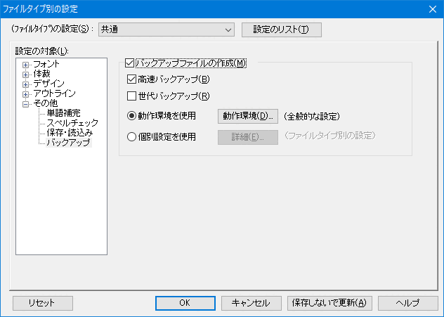
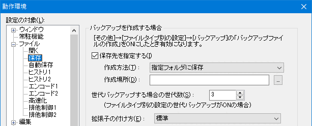

- バックアップファイル「*.BAK」が勝手に出来てしまって迷惑しています。どうしたらいいでしょうか？

バックアップファイルの設定は、「その他」→「ファイルタイプ別の設定」→「その他」→「保存・読み込み」にある、 「バックアップファイルの作成」チェックボックスで設定します。
バックアップファイルを作成しないようにするには、このチェックボックスをＯＦＦにします。
ファイルタイプ毎に設定できます。（設定する必要があります）

バックアップの詳細は、「その他」→「動作環境」→「ファイル」→「保存」で設定します。
